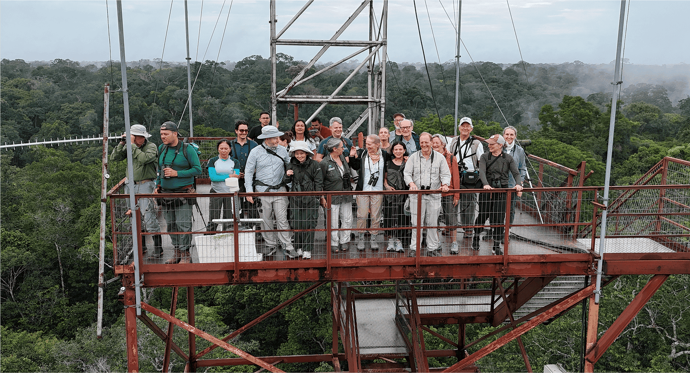
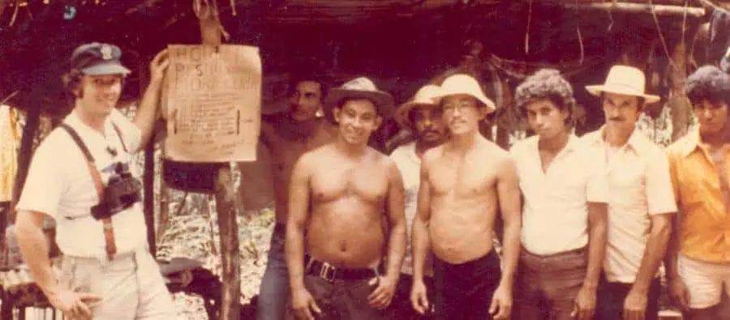
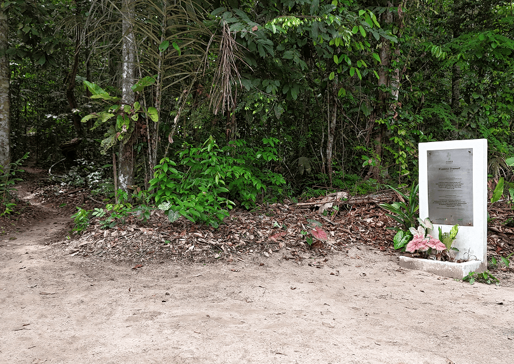
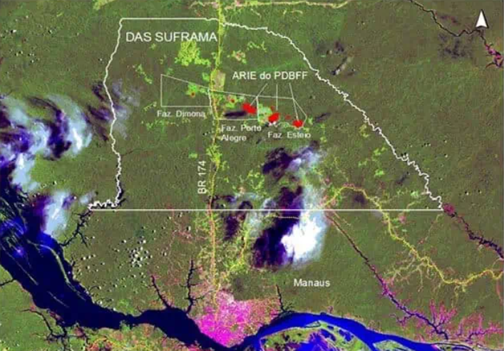

Regional Context
Manaus is on the left bank of the Negro River, at the confluence with the Solimões River, forming the Amazon River. Rio Preto da Eva is part of the metropolitan region of Manaus and is part of this vital geographic context.

Learn about the trajectory of the Biological Dynamics of Forest Fragments Project.
The BDFFP originated amidst the scientific debate on the Theory of Island Biogeography in the 1970s. Created in 1979 as "Minimum Critical Size of Ecosystems", it evolved into the Biological Dynamics of Forest Fragments Project (BDFFP) in 1988.
Taking advantage of this academic discussion, Thomas Lovejoy, through the WWF (World Wide Fund for Nature), associated with INPA and SUFRAMA, planned an experiment that could determine the minimum size a forest area would need to have to maintain and represent forest biodiversity. With this, they planned the maintenance of forest fragments within three large cattle farms that would be created in the area.
The reserves, established between 1979 and 1984, allow comparative studies on the effects of fragmentation on Amazonian biodiversity. Since surveys of some biological groups, such as trees and birds, were carried out before isolating the forest fragments. These pre-isolation inventories ensure a real understanding of the changes caused by the effect of forest fragmentation and give the BDFFP a pioneering spirit and world importance in understanding fragmented landscapes in the region.

Determine the ecological consequences of deforestation and fragmentation of tropical forests on fauna, flora, and ecosystem interactions and processes in the Amazon.
Transfer generated information to different sectors of society to favor conservation and the rational use of forest resources.
Train future professionals to act in various fields of knowledge related or not to forest fragmentation.
With a multidisciplinary and long-term approach, the BDFFP plays a crucial role in understanding the impacts of forest fragmentation on biodiversity and ecological processes.

Through detailed studies of flora and fauna, we have been able to understand how fragmentation affects species distribution, population dynamics, and ecological interaction processes. In addition to biological diversity, the BDFFP has also investigated the fundamental ecological processes that occur in forest fragments.

BDFFP discoveries have not only contributed to the advancement of scientific knowledge but have also had a direct impact on conservation policies and environmental management. Study results provided crucial evidence for the implementation of protected areas, ecological corridors, and landscape restoration measures.
The BDFFP is committed to contributing to the conservation of the Amazon through the development of science in the region.

The BDFFP is a fundamental piece in the ecological conservation puzzle. Its comprehensive approach and significant results have helped guide research and action towards the preservation of forest ecosystems worldwide.
As we face increasing challenges related to habitat loss and environmental degradation, the continuous importance of this project is more evident than ever.
Explore the scientific findings accumulated over decades of research on the fragmentation of the Amazon rainforest.
Fragmentation results in substantial biomass loss, mainly due to high tree mortality, with large trees being especially vulnerable.
This loss is not offset by the growth of lianas and small trees, making fragmented areas a source of greenhouse gas emissions.
Pioneer species become more abundant, while those typical of mature forest tend to disappear.
A shift occurs in the distribution of resources (fruits and insects) from the canopy toward the understory.
Tree mortality is seven times higher within the first 60m from the edge. The microclimate becomes drier and warmer. Species composition (invertebrates, beetles, butterflies, birds and bats) changes considerably.
Responses are variable: species richness of birds, primates, bats and insects decreases, while that of small mammals, amphibians and butterflies may increase after isolation.
Isolation affects processes such as decomposition, pollination and seed dispersal.
Note: The Theory of Island Biogeography does not apply to reserve planning for amphibians.
Edge environments are highly dynamic and tend to penetrate into fragment interiors at larger scales than previously thought.
The type of vegetation surrounding the fragment has a substantial effect on mortality rates and recolonization by birds and primates.
For birds, frogs and small mammals, persistence depends positively on the abundance of the species in the surrounding matrix.
Land Use History: The history of land use has a significant impact on forest recovery after deforestation, determining differences in floristic composition.
Carbon Sink: Secondary forests can accumulate 90–120 tonnes of dry biomass per hectare in just 10 years.
Herbivores: They have a negative impact on the regeneration of degraded areas.
of dry biomass in 10 years
120 t/ha in 10 years

The BDFFP study area comprises the Federal Conservation Unit, Area of Relevant Ecological Interest Forest Fragments Dynamics Project (ARIE BDFFP), located approximately 80 km north of the urban perimeter of Manaus, capital of the state of Amazonas.
The ARIE consists of 23 forest polygons, with 4 belonging to the municipality of Manaus and 19 to the municipality of Rio Preto da Eva, Amazonas state.
Manaus is on the left bank of the Negro River, at the confluence with the Solimões River, forming the Amazon River. Rio Preto da Eva is part of the metropolitan region of Manaus and is part of this vital geographic context.
The project area is within the Suframa Agricultural District – DAS, under the administration of the Superintendence of the Manaus Free Trade Zone (SUFRAMA). The forest polygons are distributed across three farms:
Access to the area is exclusively by land, via BR-174 (Manaus/AM to Boa Vista/RR) and AM-010 (Manaus/AM to Itacoatiara/AM), with secondary roads (vicinal roads) connecting to the farms. The roads can present difficulties due to lack of paving and poor maintenance, especially after rainy periods, and travel to the areas is done by 4WD vehicles.

We are located at Campus II of the National Institute of Amazonian Research (INPA), which is situated next to the main campus (Aleixo region). As a point of reference, there is the roundabout, also known as Bola do Coroado.
The entrance to the main campus and campus II are on Av. Bem-Te-Vi, almost opposite each other, less than 50 m from Av. André Araújo. Av. Bem-Te-Vi also gives access to the Science Grove (INPA) and the Petrópolis neighborhood.
The BDFFP building is number 129 and is located about 50 m to the left of the Campus II entrance.
The building houses administration, logistics rooms, offices for staff, researchers and students, as well as sorting sites and shelter for some reference collections.